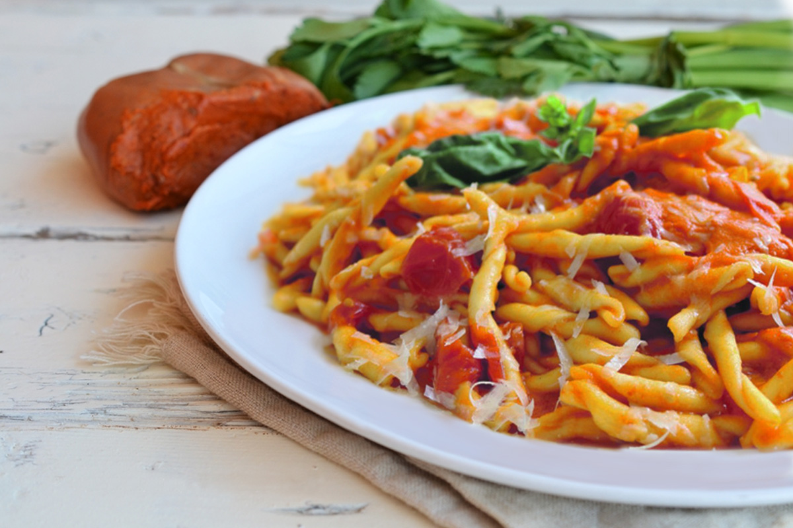

Pasta con Nduja

Penne pasta garnished with chunks of fresh tomato, shredded mozarella and a spicy, creamy nduja sauce
This traditional dish from Calabria is a must-try for anyone looking to add a little zing
to their Italian cuisine. Nduja is a spicy meat typical of the area and used throughout southern Italy.
There are many uses for nduja, from the aperitivo to main dishes, and the beauty of this southern delicacy rests
in its spicy simplicity.
Difficulty: Beginner
Prep Time: 15-20 minutes
Ingredients:
- Pasta of your choice (the beauty of this meat is that it can be paired with almost anything)
- 1 small red onion, peeled and chopped
- 400 g small cherry tomatoes cut in half
- A few basil leaves, torn into pieces
- Olive oil
- Salt
Steps:
- Gently saute the chopped onion in olive oil until soft and translucent
- Add the nduja and let it melt. Then add the tomatoes along with the basil and a good pinch of salt
- Let simmer for 15 minutes, until the tomatoes have melted into a sauce
- While sauce is simmering, bring salt water to a boil
- Cook pasta al dente
- Drain the pasta, then add it to the sauce
- Serve right away, with cheese for those who want it
- Enjoy!
Back to the Top
Home